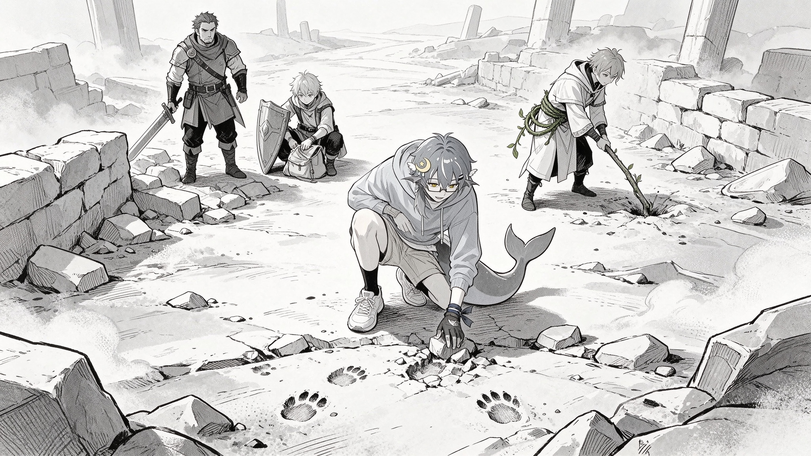
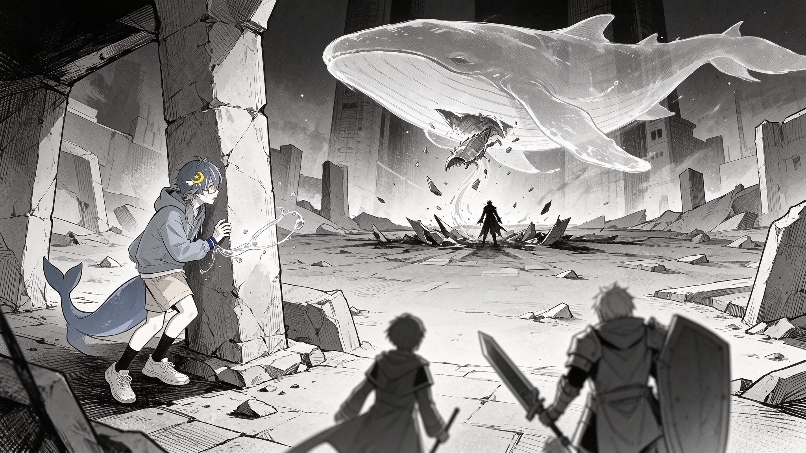
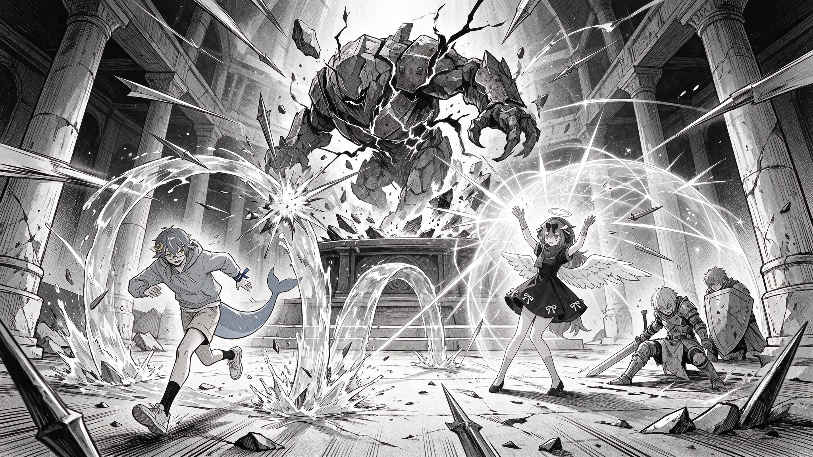
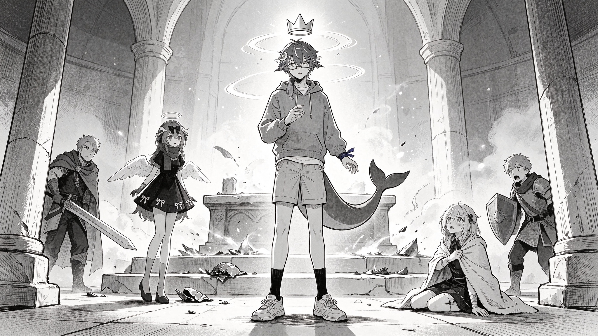

CHAPTER 02
第二卷 澜星执卫：废墟探秘
第六章 澜星执卫
经过数轮严苛的试炼磨合，渝纪与羽绪都已经和最初的自己判若两人。
曾经行事张扬、处处依仗天赋的渝纪，收敛了大半骨子里的自大。他依旧拥有顶尖的魔力掌控力，却不再轻视同伴的力量，懂得去倾听不同的战术思路，遇事会权衡利弊，那份天才的锐利之下，多了几分沉稳，旁人再也看不见过去那份令人反感的傲慢。
羽绪同样完成了蜕变。她不再刻意收拢遮掩背后的翅膀，不再被过往的屈辱与自我厌恶困住。那对容易被误认成萨凯唯半人的精灵羽翼，如今会在战斗时坦然展开，危急时刻便撑起一层淡淡的光幕庇护自己与身边的人。她善用天空精灵的力量，召唤星芒化作攻防的利刃，眼神笃定从容，自卑的阴霾从她身上渐渐散去。
选拔的终战落下帷幕。
硝烟缓缓散尽，遍地残留着战斗过后的伤痕。渝纪手臂缠着绷带，肩头还留着魔物利爪划出的浅伤；羽绪的羽翼羽毛零落，几处羽翼边缘还带着灼烧的焦痕。两人并肩坐在一块残破的巨石之上，远处的晚霞铺满整片天际，喧嚣褪去之后，终于得来片刻安宁。
“总算结束了。” 渝纪望着天边翻卷的云霞，语气平淡。过往他参加这场选拔仅仅是不愿辜负族人的期待，一路走到现在，很多想法已经悄然改变。
羽绪抬手，轻轻拂去羽翼上沾染的尘土，目光望向王国都城的方向：“对我而言，这只是一个开始。我希望能够站到更高的地方，不再被出身与过去定义。”
“更高的地方么。” 渝纪低声重复了一遍，“我还没有仔细想过往后要走什么样的路。只是经历这么多，总觉得不能再浑浑噩噩度日。”
两人没有再多深谈，只是安静地眺望着远方的暮色。
这场全国组织的精锐选拔赛，能够坚持到最后的人寥寥无几。渝纪与羽绪皆是为数不多的胜利者。王宫的使者抵达试炼场地，当众宣读嘉奖诏令，授予存活下来的优胜者**澜星执卫**的称号 —— 这个名号象征着兼具浪潮的韧性与星芒的锐利，代表王国承认他们拥有奔赴各处执行高危任务的资格。丰厚的物资、魔药与武器奖赏分发到每一位优胜者手中。所有人都以为，这便是选拔的全部终点。
可仅仅数日之后，王宫召集全部澜星执卫，公布了举办这场选拔真正的缘由。
大殿之内，气氛沉重压抑。
王国边境，盘踞着魔王章噬靥。她是力量可怖的人形魔物，拥有最为凶险的吞噬之力，可以掠夺其他生灵的魔力化为己用，不断壮大自身。长久以来，章噬靥与王国彼此互不侵扰，维持着脆弱的平衡。但近段时间，边境各处接连传来异动，她的活动变得愈发频繁，战争的阴影正在慢慢笼罩整个国度。国王正是预感到危机将至，才筹办精锐选拔赛，提前收拢锻造一批战力，以备将来对抗魔王的威胁。
真相公布的瞬间，殿内一片哗然。
魔王章噬靥的凶名几乎人尽皆知，无数听过她传说的战士面露惧色。不少刚刚拿到澜星执卫身份的人神色动摇，私下已经生出退出的念头，没有人愿意主动奔赴一场对抗魔王的死战。
渝纪站在人群之中，眉头微微皱起。他想起家乡海洋之中安稳的生活，可一想到边境无数将要身处险境的普通人，一份沉甸甸的责任心压上心头。他参加选拔本是迫于族人期盼，而此刻，他愿意为守护这片土地出力。
羽绪的眼神没有半分退缩。这正是她渴求的机会。直面这份巨大的危机，若是能够立下功绩，她便可以真正挣脱过往的枷锁，实现自己出人头地的心愿。
二人都没有提出退出。
在此之后，所有留下来的澜星执卫被拆分各个小队，投入高强度的封闭训练。
渝纪与羽绪分属不同编制，训练营地相隔很远。渝纪一头扎进日复一日的磨砺当中，不断打磨水魔法的细节，练习魔力的持久输出与防御构建。训练间隙，偶尔会有顺着溪流游来的小鱼徘徊在脚边，那是属于赛斯半人与生俱来的亲和。他偶尔会听到别人谈起羽绪，听闻她将星芒魔法与羽翼防护结合得越发纯熟，但两人始终没有碰面。每个人都在为即将到来的战事积蓄力量。
数月光阴匆匆流逝。
筛选与训练彻底结束，一支全新的作战军队正式组建完成。第一道正式任务很快下达：奔赴古老沦陷的灰砾废墟，回收遗失于此的圣物。若是取回这件圣物，便能大幅强化王国整体战力，为对抗魔王增添重要筹码。
第七章 灰砾废墟的跋涉
渝纪被编入一支五人行动小队。
队长凯伦，壮年人类战士，手持一柄阔重大剑，身经百战，性格审慎稳重；莱拉，精通自然藤蔓魔法的女术士，兼顾陷阱布设与战地急救；少年艾可，一名盾卫，背着一面布满刻纹的塔盾，负责承担正面冲击；最后便是渝纪，作为队内的中距离魔法输出。
出发前夜，小队在营地围坐在一起清点装备。
艾可正反复擦拭自己的塔盾，金属表面被磨得锃亮，少年眼底满是跃跃欲试：“听说灰砾废墟外围的魔物不算太强，说不定我们很快就能把圣物带回来。”
凯伦一边检查大剑的刃口，出言敲打他：“不要低估废墟。那里埋藏着旧时代残留的魔力污染，越往深处，危险就越高。”
莱拉把一束束晒干的治愈草药打包进布袋，笑着接话：“至少外围还算安全，我准备了不少束缚藤蔓，遇上小规模魔物，我们可以速战速决。”
渝纪坐在一旁，指尖轻轻浮动，一小股水流在掌心来回流转。经历过选拔赛的洗礼，他不再像从前那样笃定自己可以凭一己之力解决一切。
“我的水魔法可以用来牵制、阻隔敌人，也可以灭火、清理道路。遇上棘手的对手，不要硬冲，优先互相掩护。” 他平静开口。
凯伦抬眼看向他，微微点头。经历过选拔场上的名声，很多人对这位天才少年依旧带着几分先入为主的看法，但这一段时间共同训练，凯伦已经看得到渝纪的改变，不再是那个恃才傲物的少年。
踏入灰砾废墟的最初几日，局面确实如艾可期待的那般相对轻松。
废墟外围是大片倒塌的民居断墙，满地碎石，枯萎的古木斜斜插在土中，空气中弥漫着尘土与淡淡的腐朽气味。游荡在外围的大多是受魔力轻度异化的野兽魔物。
遇见落单的石爪狼，艾可举盾上前扛住扑击，莱拉甩出藤蔓捆缚住狼的四肢，凯伦一剑终结，渝纪只需要在侧面用水流干扰魔物的奔跑路线。遇到成群的腐行虫，渝纪便扬起高压水浪直接把虫群冲散。一路上众人说说笑笑，艾可还会兴致勃勃地去捡拾废墟里一些旧时代破碎的摆件。
“照这个进度，三天之内我们就能抵达核心大殿。” 一天扎营休息时，艾可啃着干粮，语气十分乐观。
凯伦却没有放松警惕，登高观察远处层层叠叠向内抬升的残垣轮廓：“外围只是皮毛。越往里面走，魔力污染浓度会成倍上涨，魔物的实力也会完全不一样。大家从今晚开始，轮流加倍守夜。”
往后的路途，危险如期而至。
深入废墟中层之后，周遭环境陡然变得压抑。曾经高大的公共建筑倾颓在地，断裂石柱林立，地面裂开深邃的黑色裂隙，裂隙底下隐隐溢出浑浊的魔力雾气。魔物不再是零散的野兽，开始出现体型庞大、魔力浑厚的变异物种。
第一次重大险情来自一头覆满厚甲的岩背蜥蜴。它潜藏在倒塌的梁柱之后骤然突袭，粗壮的尾巴横扫过来，艾可仓促举盾格挡，巨大的冲击力直接把少年撞得向后滑出数米，手臂瞬间被震得淤血青紫。莱拉迅速释放藤蔓缠绕蜥蜴的四肢，可魔物的甲壳坚硬无比，藤蔓转瞬就被挣断。渝纪立刻筑起数道厚重水墙接连阻挡对方的冲锋，凯伦抓住间隙绕到侧面，大剑狠狠劈砍在蜥蜴甲壳的缝隙之中，才艰难将魔物斩杀。
自此之后，小队再也不敢抱有侥幸心理。欢笑越来越少，每一步前进都变得格外谨慎。
战斗带来的损耗持续累积。莱拉为了掩护被魔物偷袭的艾可，被魔物利爪撕开腹腔，大量草药只能勉强稳住伤势，彻底丧失战斗能力；艾可的塔盾被魔物重击砸出蛛网般的裂痕，手臂骨骼错位，再也无法举起重盾承担正面防御。五人的小队，转眼只剩下凯伦和渝纪还保有完整作战能力。伤员只能依靠同伴搀扶，艰难跟随队伍继续向内挪动。
这一日，众人穿过一道倾颓的巨型拱门，踏入一片开阔的断壁广场。
渝纪正要抬手凝聚水魔法，警惕探查四周动静，视线却被广场对面残破塔楼的阴影牢牢抓住。
塔楼之下，伫立着一道被暗色魔力笼罩的漆黑身影，面容完全隐在黑雾之中。他身侧悬浮着一头体型骇人、由魔力构筑而成的巨鲸，庞大的虚影几乎盖住半片天空。
一头实力强横的岩壳魔从废墟深处咆哮冲出，直扑黑影。黑影只是抬手，魔力巨鲸骤然俯冲而下，磅礴的力量碾压下来。岩壳魔的嘶吼短促地戛然而止，躯体被击溃碎裂。紧接着一股无形吸力浮现，魔物残破的血肉碎片被尽数收拢，归于黑影手中。
渝纪心脏骤然收紧，伸手向后示意所有人立刻躲到粗大的断裂石柱后方。后背渗出一层薄汗，他悄然调动魔力，水流已经在袖口之下暗暗蓄势。凯伦也攥紧大剑，呼吸放得极轻，莱拉与艾可屏住呼吸，不敢发出半点声响。
他们不知道黑影属于何方势力，看方才那一战展露的力量，若是开战，这支已经伤痕累累的小队几乎没有生还的可能。
黑影的头颅微微转动，径直望向石柱藏身的方向 —— 他们已经被发现了。
渝纪全身紧绷，已经在脑海飞速盘算作战方案：用水流制造阻隔，掩护伤员后撤，凯伦负责牵制，自己寻找机会发动远程攻击。
可预想中的进攻迟迟没有到来。
黑影仅仅在原地停顿片刻，没有向他们靠近半分。他驱使魔力巨鲸缓缓转身，向着废墟更深的幽暗区域飘去，身影一点点消融在重重暗影之内。
就在侧脸短暂掠过黑雾的一瞬间，渝纪瞳孔微缩。隔着朦胧魔力，那人的五官轮廓，竟和自己有着几分难以忽视的相似。
疑惑如同细小的石子投入心底，但当下处境凶险，伤员还在身边，任务悬在肩头，他只能把这诡异的画面压在记忆深处，暂且搁置不去深究。
“我们继续前进，保持最高警戒。” 凯伦压低嗓音说道。
还没有走出广场多远，一大群群居的刃齿魔物从四周废墟缝隙之中蜂拥杀出。凯伦拖着疲惫带伤的身躯挥剑死战，却被魔物绕后偷袭，重重摔倒在地。魔物层层叠叠围拢过来，死亡的阴影瞬间笼罩小队。
千钧一发之际，一道道璀璨的星芒如同流星划破昏暗，狠狠砸进魔物群。一层莹白的光幕凌空展开，硬生生隔绝魔物的扑咬。
羽绪展开那双羽翼，自高空俯冲落地。她隶属于另一支执行相同圣物回收任务的队伍，只是分配了完全不同的行进路线，一路追踪魔物踪迹恰巧赶到此处。她所在的小队同样伤亡惨重，同行者尽数倒下，只剩她一人还在坚持推进任务。
对于意料之外的重逢，而二人其实很想多谈几句，但奈何现在情况紧急，他们立即投入了战斗中。万幸，凭借他们两人的配合，魔物成功被歼灭，这时他们才松了一口气。
地面躺倒好几名重伤者，已经没有条件再分开行动。几人简短交换情报之后，当即决定合并为一支队伍，一同向着废墟核心大殿进发。
第八章 魔力造物的囚笼
穿过蜿蜒曲折的断壁回廊与潮湿的地下通道，一行人终于抵达灰砾废墟最深处 —— 半座穹顶崩塌的古老大殿。
殿内到处散落着古老雕像的碎块，月光从穹顶巨大的破洞洒落，落在中央高高的石质祭坛上。
可祭坛上空空如也。
一头形态扭曲怪异的魔物盘踞在祭坛台面上。它的躯体混杂岩石、锈迹金属碎片，躯体表面流转着不稳定的魔力光晕。那本该属于王国目标的圣物，已经被这头魔物吞入体内，和它自身的魔力彻底交融在一起。
看见闯入的众人，魔物发出一阵混杂碎石摩擦的低沉嘶吼，战斗瞬间爆发。
没有任何人了解这头魔物的能力，所有人只能凭着本能投入作战。
几乎是转瞬之间，大殿地面轰然震动。无数锋利的岩石尖刺毫无征兆从四面八方破土而起，斜斜射向众人。艾可急忙把莱拉推到石柱后方，自己勉强侧身躲闪，依旧被一道石刺划破大腿。凯伦高举大剑劈碎迎面刺来的金属飞片，可魔物的攻击源源不绝，这边击碎一批，下一批造物转眼又在空中成型。
渝纪快速抬手，数道厚实的水墙接连在队伍前方竖起。厚重的水流屏障撞上飞来的岩石与金属，发出轰隆隆的巨响。坚硬的石块撞碎水幕，碎片依旧裹挟着力量飞溅过来。
“不要硬站在一处！分散开！” 渝纪高声大喊。
众人只能不断跑动躲闪。魔物的能力覆盖整个大殿空间，头顶、地面、两侧墙壁，随时都会凭空诞生攻击物。金属飞刃擦过凯伦的上臂，割开一道深长伤口；羽绪不停展开星芒光幕，一层光幕耗尽魔力，便立刻再撑起下一层，额角不断渗出汗水，羽翼边缘已经被飞溅的碎石划开数道口子。
每一个人都在被动挨打。他们可以击碎魔物造出来的武器，却永远跟不上对方生成的速度。大殿之内到处都是碎石碎片，伤口不断增加，体力与魔力飞速消耗。
渝纪一边操控水流，一边在奔跑躲闪的同时强迫自己冷静思考。
他心中充满焦灼。这样下去是死局。就算他们魔力再充沛，也会被无休止的消耗拖垮。他下意识瞥向同伴，凯伦身上伤口越来越多，动作已经开始迟缓；羽绪的脸色渐渐发白，持续开启防御对精灵魔力的负担极大；伤员躲在石柱之后，也未必能一直保证安全。
难道就只能这样无休止被动防御？
他不再把全部精神放在进攻上，开始分出大半注意力，观察祭坛之上魔物本身的状态。
每当魔物大批量召唤岩石、金属进行轰击的时候，它躯体表面那层流转的魔力光晕就会变得稀薄，外壳上会裂开一道道细碎、闪烁着微光的裂隙，那是力量外泄的痕迹。而当攻击的浪潮短暂停歇，魔物会伸出数道由碎石构成的触须，将地面上那些被众人击碎的石块、金属碎片重新拉回自己体内。随着碎片回收，它身上的裂隙又缓缓愈合，魔力光晕再度变得饱满。
渝纪接连两次故意诱使魔物释放大规模攻势，借着混乱不断印证自己看到的现象。
第一次他以为只是偶然，第二次、第三次，相同的景象反复出现。
他的脑海之中开始串联线索。
如果这些岩石、金属是魔物凭空无偿创造，那它根本不需要回收破碎的残骸。回收这个行为本身就说明，这些造物并不是无中生有，而是消耗自身魔力换来的产物。产出越多，自身损耗就越大，破绽也就暴露得越明显。击碎这些物质，碎片依旧散落在场地之中，还会被它回收利用，等于敌人可以反复消耗同一批资源。
我们一直在做错误的事。
这个认知猛地击中渝纪。长久以来战斗的惯性，遇到敌人的攻击就会本能打碎，可打碎，恰恰是在给对方留下可以回收的材料。
渝纪心脏狂跳，他躲开一道呼啸而来的金属巨斧，高声向着所有人呼喊，声音在大殿残壁之间回荡：
“各位！听我说！它的造物不是无限的！制造的东西越多，自身破绽就越大！不要打碎那些攻击物！打碎之后的碎片会被它回收回去补充力量！”
场内众人一边狼狈闪避，闻言皆是心头一震。
羽绪听到这番话，立刻调动起精灵与生俱来的魔力感知。她闭上眼睛，精神向外铺展，捕捉大殿之内流动的每一缕魔力丝线。那些漫天飞舞的岩石与金属碎片，在她的感知之中，全部被一层同源的魔力脉络缠绕。
“渝纪说得没错！” 羽绪骤然睁眼，声音穿透嘈杂的打斗声响，“这些岩石、金属并不是真正的无机物，全部是魔力实体化形成！”
突破口终于清晰。
“我们要做的是封存，而不是摧毁！” 渝纪当即下达指令，“莱拉，用你的藤蔓编织封闭结界；羽绪，用星芒编织牢笼困住实体；我用水流构筑密封屏障。把它制造出来的魔力实体全部禁锢，断绝它回收的途径！”
局势就此彻底扭转。
莱拉忍着身上的伤痛，催动魔力，粗大藤蔓交错缠绕，编织成一个个密闭的网笼；羽绪引导星芒层层交织，化作闭合的光牢，将飞来的金属、石块完整包裹；渝纪涌动的水流化作一个个封闭水囊，把大块造物完整收纳其中。
魔物依旧在不停生成各式各样的攻击，只是这些造物刚一出现，就被一层又一层不同形式的魔力容器完整封存，碎片再也落不到地面，再也无法被它回收。
得不到补充，魔物的力量肉眼可见地持续衰落。它躯体表面的魔力裂隙越扩越大，动作开始迟滞，制造出的造物体型不断缩小，威力也随之下降。
抓住魔物力量跌落、破绽完全暴露的瞬间。渝纪催动潮水般奔涌的水之力，羽绪汇聚起凝练的星芒，两股力量并肩向前，直直刺入魔物魔力核心所在的位置。
扭曲的躯体剧烈震颤，伴随着一阵刺耳的碎裂声响，庞大的魔物轰然倒塌，彻底归于死寂。
魔物的形体消散之后，一顶小巧、仅带有三个尖角的立体王冠自消散的魔力雾霭之中缓缓悬浮升起，这便是众人苦苦寻找的圣物。
还没等任何人伸手，王冠仿佛受到某种宿命般的牵引，骤然破空飞来。渝纪甚至来不及抬手阻挡，王冠便轻轻落下，稳稳吸附在他的头顶。
大殿之中一瞬间陷入死寂。
凯伦怔怔望着这一幕，握剑的手微微松开；羽绪微微睁大双眼，目光落在那顶安放在渝纪头顶的王冠之上；躲在石柱后方的艾可与莱拉，也满脸难以置信。
渝纪自己同样满心错愕。他下意识抬手想要将王冠摘下来，王冠却如同长在身上一般纹丝不动。他试着调动自身魔力，尝试去沟通这件圣物，可王冠安安静静戴在头上，没有传递来任何讯息，也没有响应他的魔力。几番尝试无果，他只能接受这个离奇的现状，带着王冠，带领一众伤员踏上返回都城的归途。
第九章 紧急诏令
灰砾废墟任务结束的消息，连同圣物王冠主动归附渝纪这件奇事，顺着信使快马传遍整个王国。
回到都城之后，伤员被送入军医处疗养。羽绪陪了队员一段时间后回到队伍继续执行任务，而渝纪得到短暂的休整许可，被安排住进澜星执卫专属的居所。头顶的王冠依旧没有办法取下。无数疑问盘旋在他的脑海：这顶王冠究竟是什么来历？为什么唯独会对自己产生如此强烈的亲和？它又具备怎样的力量？
他多次静下心来尝试和王冠建立联系，每一次都是徒劳。王冠安安静静，只有偶尔在夜深人静的时候，会透出一丝几乎难以察觉的温热。
这一日黄昏，落日把院落的墙面染成暖橘色。渝纪正坐在窗前，指尖把玩一缕流转的水流，又一次试探着感应头顶王冠的力量。
院门外传来急促的脚步声。王宫的传令官没有提前通报，直接大步闯入庭院，神色肃穆，语气带着不容拖延的急迫。
“澜星执卫渝纪，国王陛下即刻召你入宫觐见，请随我立刻动身，不得延误。”
渝纪心中猛地一沉。
寻常的觐见会提前一日下达通知，给予整理与准备的时间。这般黄昏时分骤然登门，语气紧迫，显然事态已经非同寻常。
他站起身，抬手碰了碰头顶被布巾盖住的王冠。窗外晚风穿进屋内，吹动桌角的纸张。他不清楚等待自己的将会是什么，边境魔王章噬靥的阴影，圣物王冠身上藏着的秘密所有的线索仿佛都在这一刻向着他收拢过来。
渝纪深吸一口气，迈步跟随传令官向外走去。




↑